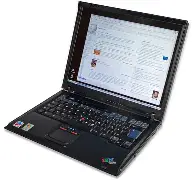

Un ordinateur portable, ou simplement un portable, est un ordinateur personnel dont le poids et les dimensions limitées permettent un transport facile. Les ordinateurs portables ont plusieurs usages, à la fois professionnels, personnels et éducatifs, et sont parfois utilisés pour la sauvegarde de médias personnels. Un ordinateur portable [archive] est muni des mêmes types de composants qu'un ordinateur de bureau classique, incluant notamment un écran, des haut-parleurs et un clavier physique.
| Description | Image | Prix |
| l'Ordinateur portable est consus, en fin de lemmener plus facilement, est plus rapidement partout avec nous. |  | Entre 250 et 700 Euros |